Instrumental forms
Forms
Instrumental music is the main pillar of the Classical period. During this time, the musical forms that would structure Western music for centuries were developed and established. The most important ones are the sonata, the symphony, the concerto for soloist and orchestra, and chamber music, especially the string quartet.
- The sonata is a composition for one or two instruments (often with piano), written in several movements.
- The symphony is a large-scale work for full orchestra, also divided into several movements.
- Chamber music is intimate music for small ensembles (quartets, trios, etc.), performed in small rooms and written for a few instruments.
Confusion about the sonata
When we talk about the sonata, there is often a lot of confusion. We must distinguish between sonata and sonata form.
- The sonata is a complete musical work (a genre) for one or a few instruments, usually written in several movements.
- Sonata form is the specific structure typically used in the first movement of these sonatas, but also in symphonies, string quartets and concertos. It is characterized by three main sections: exposition, development and recapitulation.
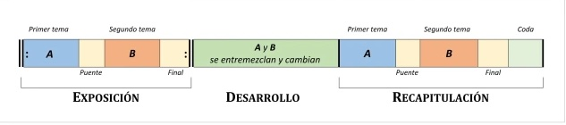
In other words:
- Think of the sonata as a novel with several chapters (the complete work).
- Sonata form is like the structure of one specific chapter inside that novel (Exposition, Development, Recapitulation).
Escuchamos:
- Piano Sonata No. 16 in do major, first movement (sonata form), by Wolfgang Amadeus Mozart.
- Piano Sonata No. 14 in do-sharp minor, first movement (sonata form), by Ludwig van Beethoven.
- Piano Sonata No. 14 in do-sharp minor, third movement (sonata form), by Ludwig van Beethoven.
- Symphony No. 40 in sol minor, first movement (sonata form), by Wolfgang Amadeus Mozart.
- Symphony No. 5 in do minor, first movement (sonata form), by Ludwig van Beethoven.
- Symphony No. 94, third movement (minuet form, a dance), by Joseph Haydn.
Instrumentos
The classical orchestra
During the Classical period, there was an important change in instruments. The harpsichord was replaced by the piano, which allowed greater control of sound intensity. The orchestra gradually became more stable and developed a fixed structure, with a predominance of strings and an increasingly important role for wind instruments. The Classical orchestra is smaller than the Romantic one and seeks balance between sections. The conductor used to play an instrument as he directed the orchestra.
Strings family
Bowed strings: they became the heart of the orchestra: violin, viola, cello and double bass (their numbers increased).
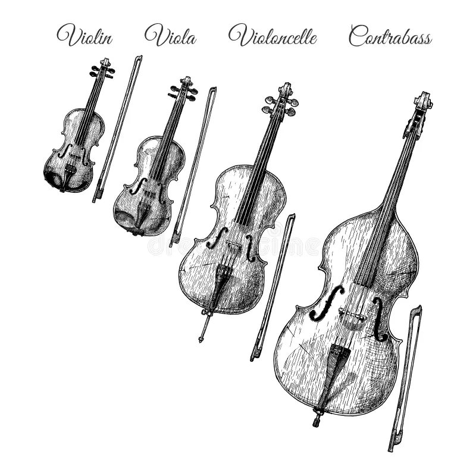
Percussive strings: the piano (pianoforte) was the main instrument, standing out for its dynamic versatility (ability to play loud and soft). It was fundamental in chamber music and concertos. In the Classical period, it had between 61 and 73 keys, depending on the model.
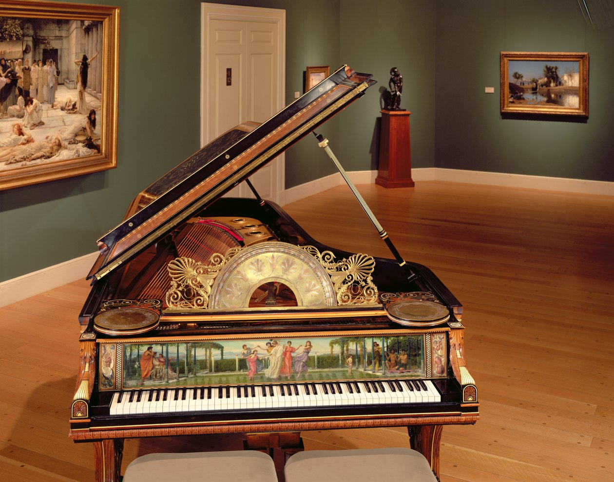
Woodwinds
They became fully integrated and expanded: flute, oboe, clarinet and bassoon.
 |
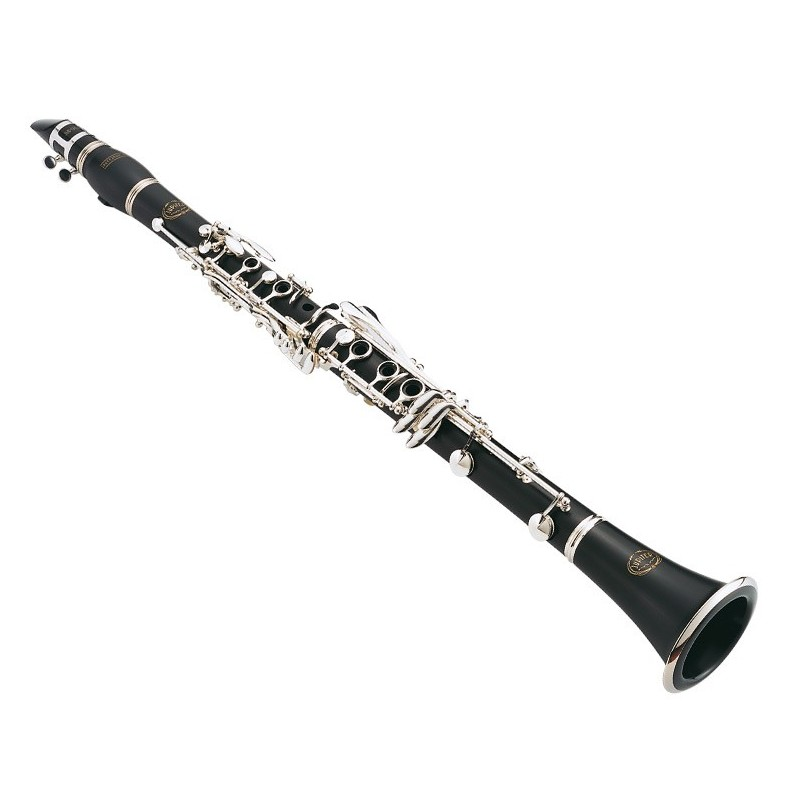 | 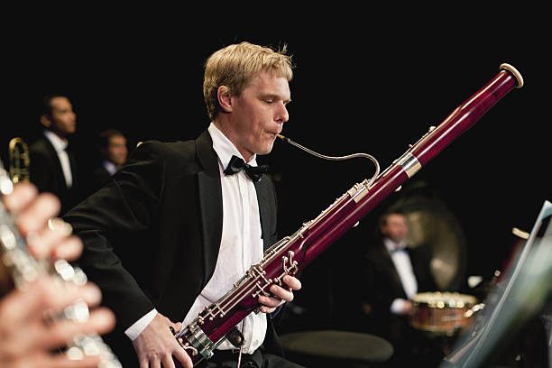 | |
| Flute | Oboe | Clarinet | Bassoon |
Brass
Trumpet, horn and trombone (used more frequently).
| 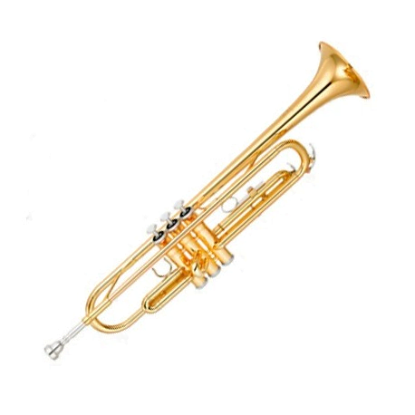 |
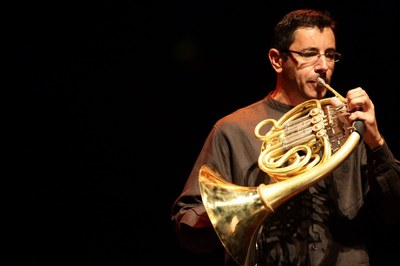 |
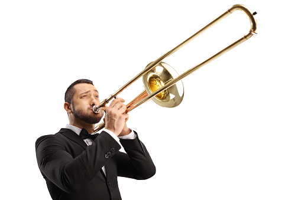 |
| Trumpet | Horn | Trombone |
Percussion
timpani (very important), snare drum, cymbals, triangle and bass drum.
| 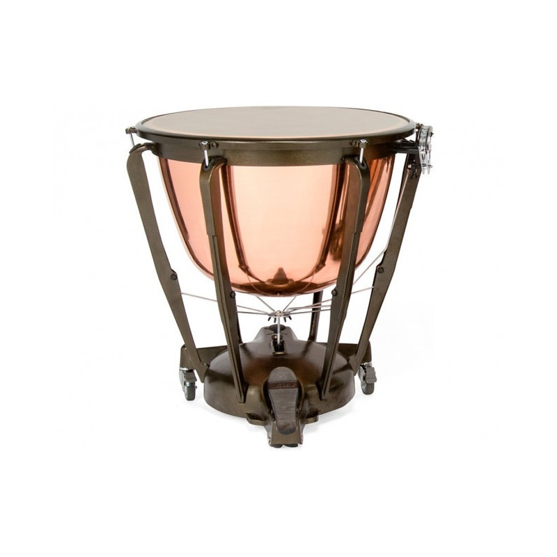 | 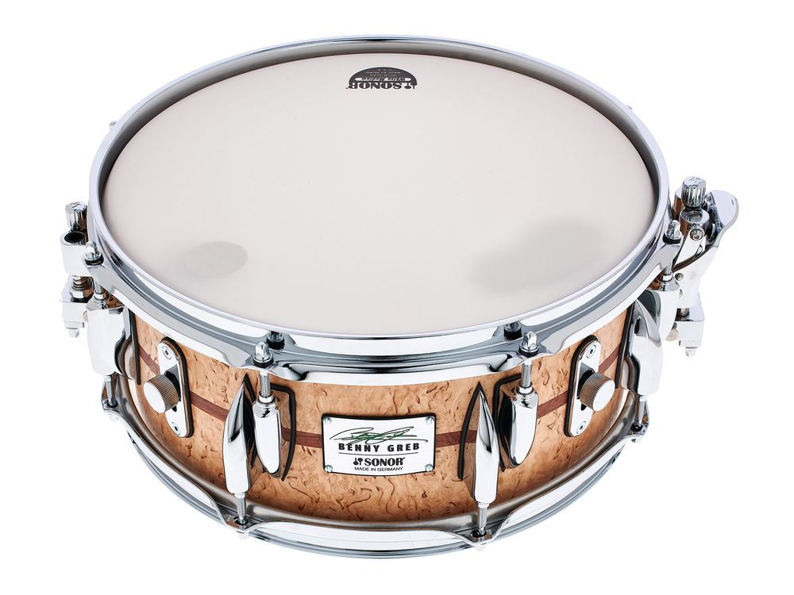 |
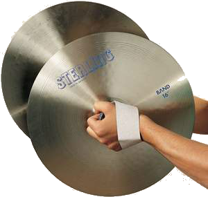 |
 |
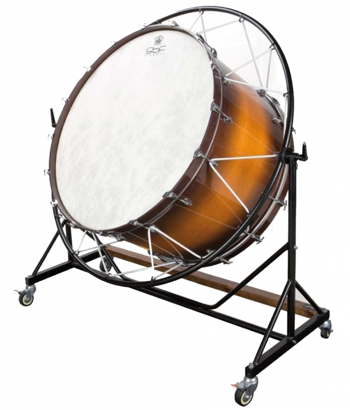 |
| Timpani | Snare | Cymbals | Triangle | Drum |